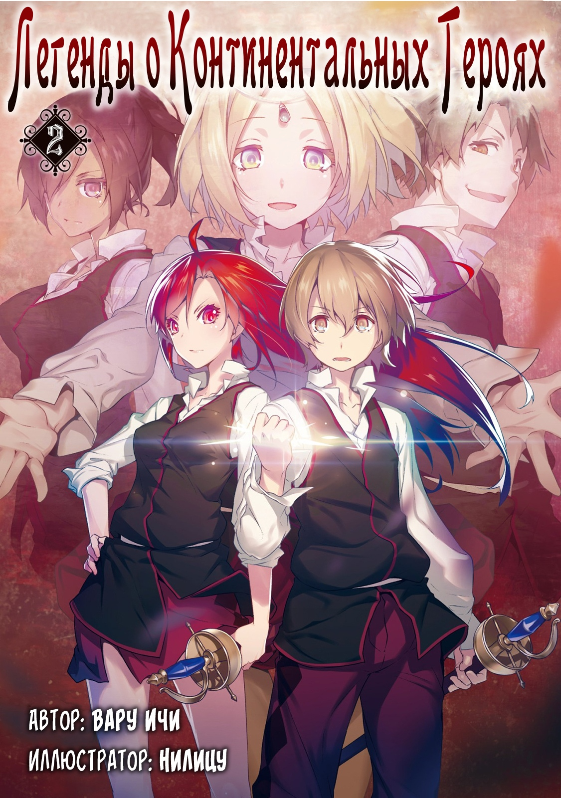

Легенды о Континентальных Героя
Английское наименование: Legend of the Continental Heroes
Автор: Вару Ичи
Издательство: Syosetu
Вид: Вэб-новелл
Статус: Продолжается
Перевод с японского: Mushu Sibiriak
Редактор: triniti
Аннотация:
Я жил простой жизнью, а потом вдруг оказался в совершенно другом мире. Что это, новым мир? Нет, он так похож на средневековую Европу, но разительно отличается от моего старого мира.
Мне дана великая способность - все знания из другого мира остались вместе со мной, и теперь я надеюсь добиться чего-то большего, чем жизнь обычного крестьянина, коими являются мои новые родители.
Страна, в которой я родился, Селестия, окружена врагами и постоянно находится под пристальным вниманием других стран. Я решил стать военным офицером, чтобы использовать свои знания по полной, и для этого поступил в военную академию!
Стоп... Фехтование? Стрельба из лука? Верховая езда?! Мои знания тут совершенно не к месту!